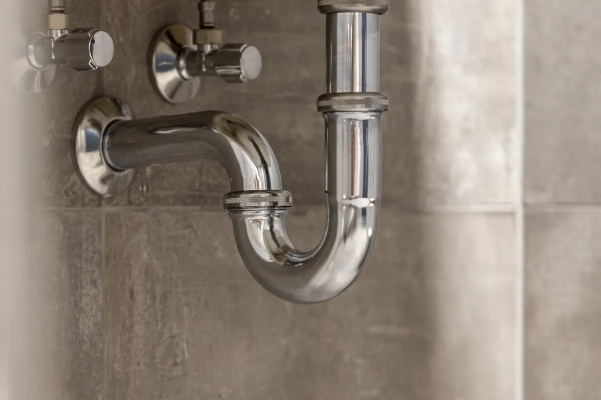

When it comes to plumbing, some of the most important parts of your system are also the easiest to overlook. One of those parts is the P-trap. Found beneath sinks and connected to showers, tubs, floor drains, and other plumbing fixtures, a P-trap plays a major role in keeping your home safe, clean, and comfortable.

If your drains smell bad, run slowly, gurgle, or leak, the issue could be connected to a missing, damaged, clogged, or improperly installed P-trap. That’s where Angle Stop Plumbing can help.
What Is a P-Trap?
A P-trap is the curved section of pipe located beneath many plumbing fixtures. It gets its name from its shape, which looks similar to the letter “P” when installed.
Its main job is simple but extremely important: it holds a small amount of water inside the bend of the pipe. This water creates a seal between your home and the sewer or drain system.
Without that water barrier, unpleasant and potentially harmful sewer gases can travel back up through your drains and into your home.
Why P-Traps Matter
They Help Block Sewer Gas
One of the most important reasons for having properly installed P-traps is to prevent sewer gas from entering your living space. If you notice a foul odor coming from a sink, shower, tub, or floor drain, the P-trap may be dry, leaking, clogged, installed incorrectly or not installed at all.
A functioning P-trap helps keep those odors where they belong — out of your home.
They Protect Your Indoor Air Quality
Bad smells are not just unpleasant. Sewer gases can affect the comfort and air quality of your home posing potential health risk. A properly working P-trap helps maintain a cleaner, healthier indoor environment for you and your family.
They Catch Debris Before It Travels Farther
P-traps can also catch small debris before it moves deeper into your plumbing system. Hair, soap residue, food particles, and other materials may collect in the trap over time. While this can sometimes cause a clog, it also means the issue may be easier to access and repair before it becomes a bigger plumbing problem.
They Help Your Plumbing Drain Properly
When a P-trap is installed correctly, it works with your plumbing vent system to help water drain smoothly. If the trap is damaged, clogged, or improperly positioned, you may notice slow draining, bubbling, gurgling noises, or recurring backups.
They Are Often Required by Plumbing Code
P-traps are a standard and important part of modern plumbing systems. Most sinks, tubs, showers, and similar fixtures need a properly installed trap to meet basic plumbing requirements and function safely.
Signs You May Have a P-Trap Problem
You may need professional plumbing service if you notice:
- Foul odors coming from drains
- Slow-draining sinks, tubs, or showers
- Gurgling sounds after water drains
- Water leaking under a sink
- Recurring clogs
- A dry drain in a rarely used fixture
- Visible corrosion, cracks, or loose fittings
- Sewer-like smells in bathrooms, kitchens, laundry rooms, or utility areas
Sometimes the fix is simple. Other times, the issue may point to a larger drainage, venting, or installation problem. A trained plumber can inspect the system and determine the best solution.
Common Causes of P-Trap Issues
P-trap problems can happen for several reasons, including:
- Clogs: Hair, grease, soap scum, food waste, and debris can build up inside the trap.
- Leaks: Loose connections, worn seals, or damaged pipes can allow water to escape.
- Dry traps: Fixtures that are not used often may allow the water seal to evaporate.
- Improper installation: A trap that is the wrong size, wrong shape, or incorrectly positioned may not work as intended.
- Corrosion or damage: Older metal traps can rust or weaken over time.
- Missing: Occasionally P-Traps are missing entirely, often the result of a DIY'er or a Handyman not familiar with codes and the drainage process.
- Poor venting: Venting issues can siphon water out of the trap and break the protective seal.
How Angle Stop Plumbing Can Help
If you are experiencing drain odors, leaks, slow drainage, or other plumbing concerns, Angle Stop Plumbing is ready to help. Their trained service technicians can inspect your sinks, showers, tubs, and other fixtures to identify whether the P-trap is the source of the problem.
Angle Stop Plumbing can help with:
- P-trap inspection and diagnosis
- P-trap repair or replacement
- Drain cleaning
- Leak repairs
- Odor investigation
- Fixture plumbing repairs
- Shower, tub, and sink drain issues
- Preventive plumbing maintenance
Whether the problem is a simple clog or a more complex plumbing issue, Angle Stop Plumbing can provide dependable service to help keep your home safe, clean, and comfortable.
Don’t Ignore Drain Odors or Slow Drains
A small plumbing issue can turn into a larger problem if left untreated. If something smells wrong, drains slowly, or leaks beneath your sink, it’s best to have it checked before it leads to water damage, recurring clogs, or ongoing odor problems.
P-traps may be small, but they do a big job. They help protect your home from sewer gases, support proper drainage, and keep your plumbing system working the way it should.
If you suspect a P-trap issue in your sink, shower, tub, or another fixture, contact Angle Stop Plumbing today for professional plumbing service you can trust.